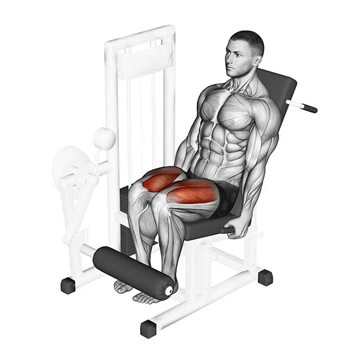
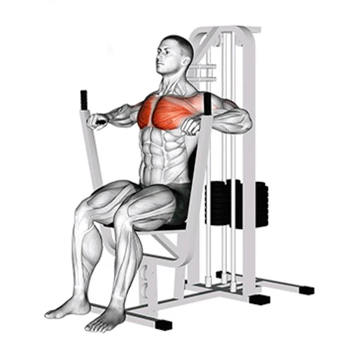
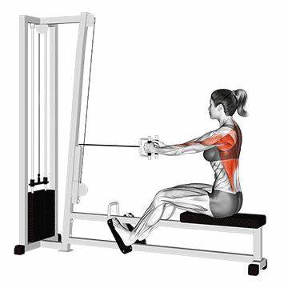

| Alguns dos Nossos Equipamentos | |
|---|---|
|  | Cadeira Extensora |
| O principal movimento articular realizado na cadeira extensora pe a extensão do joelho, portanto o quadríceps (vasto lateral, vasto medial, vasto intermédio e reto femoral) são os principais músculos trabalhados durante o exercício. [fonte] | Supino Vertical |  |
| O supino vertical é um exercício popular e eficaz para desenvolver força, tamanho e definição nos músculos da parte superior do corpo. Ao usar uma máquina de peso guiada, este exercício oferece uma maneira acessível e controlada de direcionar os músculos do peito, ombros e quadríceps. [fonte] | |
|  | Remada Baixa |
| A remada Baixa é um exercício de máquina para costas feito sentado no banco usando a barra triângulo. A Remada trabalha inúmeros músculos como o lombar, latíssimo do dorso, trapézio, deltoide posterior e até mesmo o braquiorradial. [fonte] |